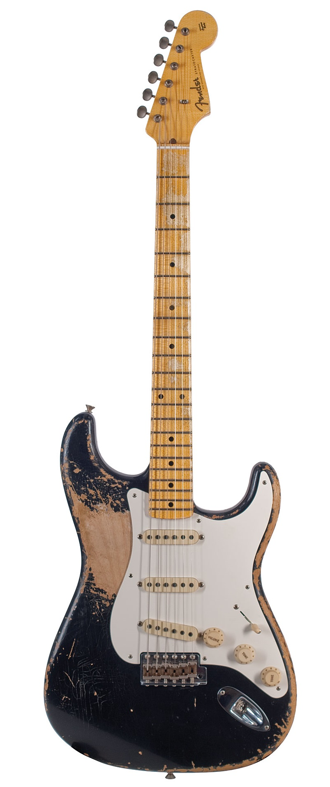
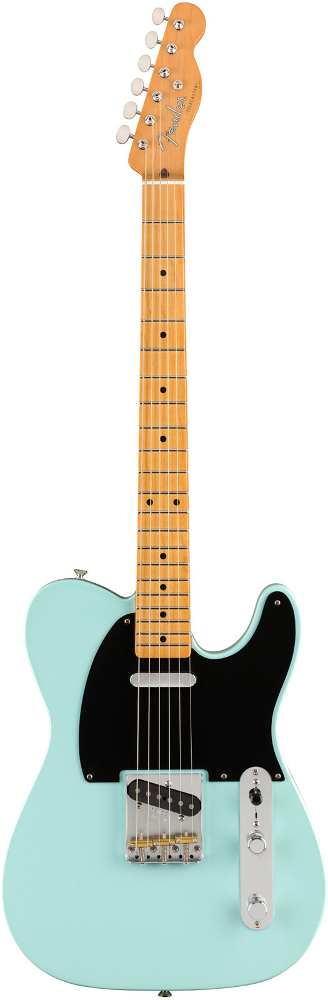
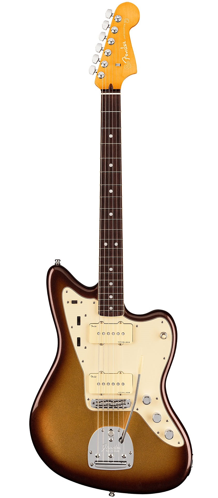
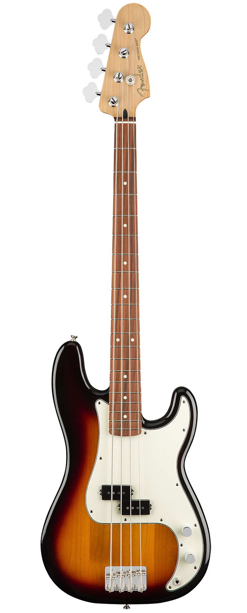
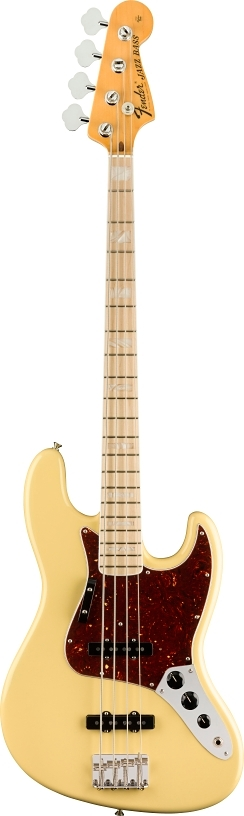

History of the most popular Fender Guitar models
Fender is an American manufacturer of stringed instruments and amplifiers. Fender produces acoustic guitars, bass amplifiers and public address equipment, but is best known for its solid-body electric guitars and bass guitars, particularly the Stratocaster, Telecaster, Jazzmaster, Precision Bass, and the Jazz Bass. The company was founded in Fullerton, California by Clarence Leonidas "Leo" Fender in 1946. Its headquarters are in Scottsdale, Arizona.
Electric Guitars
Fender Stratocaster
The Fender Stratocaster, colloquially known as the Strat, is a model of electric guitar designed from 1952 into 1954 by Leo Fender, Bill Carson, George Fullerton and Freddie Tavares. The Fender Musical Instruments Corporation has continuously manufactured the Stratocaster from 1954 to the present. It is a double-cutaway guitar, with an extended top "horn" shape for balance. Along with the Gibson Les Paul and Fender Telecaster, it is one of the most-often emulated electric guitar shapes. "Stratocaster" and "Strat" are trademark terms belonging to Fender. Guitars that duplicate the Stratocaster by other manufacturers are sometimes called S-Type or ST-type guitars.
The guitar introduced into the popular market several features that were innovative for electric guitars in the mid 1950s. The distinctive body shape, which has become commonplace among electric guitars, was revolutionary for the time period, and for the first time a mass-market electric guitar did not significantly resemble earlier acoustic models. The offset waist, double cutaway, elongated horns, and heavily contoured back were all designed for better balance and comfort to play while standing up and slung off the shoulder with a strap. The three-pickup design offered players increased versatility and choice in tone quality over earlier one- and two-pickup electric guitars, and a responsive and simplified vibrato arm integrated into the bridge plate, which marked a significant design improvement over other vibrato systems, such as those manufactured by Bigsby. All of these design elements were popularized and later became an industry standard due to the success of the Stratocaster.
Over the years, countless variations of the Stratocaster have been made. The modular nature of the guitar, with its easily removable components, left players and luthiers to perform numerous modifications to their own guitars, changing out pickups or necks to fit the needs of the player. Fender has released numerous models with different pickup configurations, and has made other small modifications to the electronics and components of the base model, such as changing the initial 3-position selector switch to a standard 5-position selector switch, as well as other small cosmetic changes to things like tuning pegs and types of woods used in various parts of the guitar. Various other companies have produced their own Strat-style bodies known as Superstrats.
Click here to listen to the Stratocaster
Fender Telecaster
The Fender Telecaster, colloquially known as the Tele /ˈtɛli/, is the world's first commercially successful solid-body electric guitar. Its simple yet effective design and revolutionary sound broke ground and set trends in electric guitar manufacturing and popular music. Introduced for national distribution as the Broadcaster in the autumn of 1950 as a two-pickup version of its sister model, the single-pickup Esquire, the pair were the first guitars of their kind manufactured on a substantial scale. A trademark conflict with a rival manufacturer's (Gretsch Broadkaster) led to the guitar being renamed in 1951. Initially, the Broadcaster name was simply cut off of the labels placed on the guitars (leading to a limited run of nameless guitars known as "No-casters") and later in 1951, the final name of Telecaster was applied to the guitar. The Telecaster quickly became a popular model, and has remained in continuous production since its first incarnation.
Just like the Fender Stratocaster, the Telecaster is also a versatile guitar, usable for most styles of music and has been used in many genres, including country, reggae, rock, pop, folk, soul, blues, jazz, punk, metal, alternative, indie rock, and R&B. The base model has always been available, and other than a change to the pickup selector switch configuration, a thinning of the neck, and a few variations on the bridge design, it has remained recognizable and mostly unchanged from the 1950s. Several variant models have been produced over the years including those with different pickup configurations and electronics, semi-hollow body designs, and even a twelve string model. Even in 2020, the Fender Professional II variant in Butterscotch Blond finish looks almost indistinguishable from the original Telecaster from the early 1950s.
The archetypical Fender Telecaster is a solid-body electric guitar with a flat asymmetric single-cutaway body; the body is usually made from alder or ash. The neck is usually made from maple and attached to the body with screws (often referred to as "bolts") and has a distinctive small headstock with six tuning pegs mounted inline along a single side; the fingerboard may be maple or another wood, e.g. rosewood, and has at least twenty-one frets. The Telecaster's body is front-routed for electronics; the bridge pickup is mounted in a metal plate attached to the guitar's bridge, other pickups are mounted in a plastic pickguard, and the controls are mounted in a metal plate on the lower bout of the guitar. Most Telecasters have two single-coil pickups, a pickup selector switch, a single volume control and a single tone control. Fixed bridges are almost universal, and the original design has three individually adjustable dual-string saddles whose height and intonation can be set independently. (Many newer models have six saddles.) The output jack is mounted on the edge of the lower bout of the guitar. Many different colours have been available.
Click here to listen to the Telecaster
Fender Jazzmaster
The Fender Jazzmaster is an electric guitar designed as a more expensive sibling of the Fender Stratocaster. First introduced at the 1958 NAMM Show, it was initially marketed to jazz guitarists, but found favor among surf rock guitarists in the early 1960s. Its appearance is similar to the Jaguar, though it is tonally and physically different in many technical ways, including pickup design, scale length and controls.The Jazzmaster's contoured "offset-waist" body was designed for comfort while playing the guitar in a seated position, as many jazz and blues artists prefer to do. A full 25½" scale length, 'lead' and 'rhythm' circuit switching with independent volume and tone controls, a ' floating tremolo with tremolo lock, and a uniquely designed bridge, unique indeed, were other keys to the guitar's character. The tremolo lock can be manually activated to keep the entire guitar from going out of tune if one string breaks. The Jazzmaster also had an extra-long tremolo arm. The bridge and tremolo construction is very different from that of the Stratocaster, and gives the Jazzmaster a different resonance and generally less sustain. The bridge sits on two fulcrum points and moves back and forth with the tremolo motion. The functionality of the bridge is a topic that is widely discussed. Some consider the clipped sustain as part of the Jazzmaster sound, whereas others argue that the design is flawed. Aftermarket versions that provided more sustain and less buzz were created during the 2000s by companies such as Mastery, Staytrem and Halon.
The body is larger than that of other Fender guitars, requiring a more spacious guitar case. The Jazzmaster had unique wide, white 'soapbar' pickups that were unlike any other single coil guitar pickup. Jazzmaster pickups are often confused with Gibson's P-90 pickups. Although they look similar, they are constructed differently. Whereas the polepieces of the Jazzmaster pickups are magnets, the P-90 has its magnets placed underneath the coil. The JM coil is wound flat and wide, even more so than that of the P-90. This is in contrast to Fender's usual tall and thin coils. This 'pancake winding' gives them a warmer thicker tone without losing their single coil clarity. Additionally, due to the pickups being reverse-wound, the pickups provide a 'hum cancelling' effect in the middle pickup position. This position eliminates the typical 60-cycle mains hum that is inherent in most single-coil pickups. The Jazzmaster has a mellower, 'jazzier' tone than the Stratocaster, although it was not widely embraced by jazz musicians. Instead, rock guitarists adopted it for surf rock. The Ventures, The Surfaris, and The Fireballs were prominent Jazzmaster users.
One of the Jazzmaster's notable features is the pickup circuit featuring unusual "roller" thumbwheel controls and slide switch at the upper neck end of the pickguard. The slide switch selects between two different pickup circuits, the "lead" and "rhythm" circuits. When the switch is in the lead position, the guitar's tone is controlled by the conventional tone and volume knobs and the pickup selector switch. When it is in the rhythm position, it selects the neck pickup only with the brightness rolled off slightly due to different values of the potentiometers (50kΩ vs 1MΩ in the lead circuit), and the volume and tone are controlled by the two thumbwheels; the other controls are bypassed. The intention was that this circuit would allow the performer to quickly switch to a "preset" volume and tone setting for rhythm playing. The lead circuit pot values also stray from Fender's usual spec. Up until the introduction of the Jazzmaster, Fender used 250kΩ pots on their guitars. The Jazzmaster's lead circuit uses 1MΩ pots instead, contributing to its unique tonal characteristics. As a concession to its more conservative audience, the Jazzmaster was the first Fender guitar carrying a rosewood fingerboard instead of maple. The fingerboard had “clay dot” position inlays and was glued onto the maple neck.
Click here to listen to the Jazzmaster
Electric Basses
Fender Precission Bass
The Fender Precision Bass (often shortened to "P-Bass") is a model of electric bass manufactured by Fender Musical Instruments Corporation. In its standard, post-1957 configuration, the Precision Bass is a solid body, four-stringed instrument equipped with a single split-coil humbucking pickup and a one-piece, 20-fret maple neck with rosewood or maple fingerboard. Its prototype, designed by Leo Fender in 1950, was brought to market in 1951. It was the first electric bass to earn widespread attention and use, remaining among the best-selling and most-imitated electric basses with considerable effect on the sound of popular music.
The double bass, as a very large instrument, is often regarded as physically cumbersome and difficult to transport compared with smaller instruments. It was also becoming hard to hear in large bands or those that used amplified instruments, and it requires specialised skills to play that are distinct from those required to play the guitar. The Precision Bass was designed to overcome these problems. The name "Precision" came from the use of frets to play in tune more easily than upon the fretless fingerboard of the double bass. The electric bass, however, lacks the distinctive acoustic qualities of the double bass, offering a more solid, harder-edged sound with more sustain. The bass guitar became more dominant and transformed the beat and rhythm of pop music from jump blues and swing to rhythm and blues, rock, soul and funk.
Acceptance of the electric bass was initially slow, as upright bassists looked at this new instrument with similar contempt, as guitar players did with its solid-body sibling, the Telecaster. It was vibraphonist/drummer Lionel Hampton's band that was among the first to incorporate the new instrument, with subsequent help by the endorsement of Elvis Presley's bass-player Bill Black, who was beginning to use a Precision Bass during the filming of Jailhouse Rock. It was reputed that Black became so frustrated over his initial inability to get used to playing it, he angrily threw it on the floor. Fender also delivered an early Precision to Los Angeles session bassist and arranger Shifty Henry. Monk Montgomery became the second jazz player to popularize the "Fender Bass"; first, while playing with Lionel Hampton; and then with his brother, guitarist Wes Montgomery. By the end of the 1950's the "P-Bass" was finally gaining acceptance with both rock 'n roll and country bassists, as well as guitarists who would double on the instrument; most notable, was Carol Kaye, a jazz guitarist, who as a bassist, became best-known for her work as part of the consortium of L.A. session musicians, known as The Wrecking Crew.
Click here to listen to the P-Bass
Fender Jazz Bass
The Fender Jazz Bass (often shortened to J-Bass) is the second model of electric bass created by Leo Fender. It is distinct from the Precision Bass in that its tone is brighter and richer in the midrange and treble with less emphasis on the fundamental frequency. The body shape is also different from the Precision Bass, in that the Precision Bass has a symmetrical lower bout on the body, designed after the Telecaster and Stratocaster lines of guitars, while the Jazz Bass has an offset lower bout, mimicking the design aesthetic of the Jaguar and Jazzmaster guitars.
First introduced in 1960 as the Deluxe Model, it borrowed design elements from the Jazzmaster guitar. It was renamed the Jazz Bass as Fender felt that its redesigned neck—narrower and more rounded than that of the Precision Bass—would appeal more to jazz musicians. The Jazz Bass has two single coil pickups with two pole pieces per string. As well as having a slightly different, less symmetrical and more contoured body shape (known in Fender advertising as the "Offset Waist Contour" body), the Jazz Bass neck is noticeably narrower at the nut than that of the Fender Precision Bass. While the Precision Bass was originally styled similarly to the Telecaster guitar, the Jazz Bass' styling was inspired by the Jazzmaster guitar, with which the Jazz shared its offset body and sculpted edges that differentiate it from other slab-style bass bodies.
The original intention of the instrument was to appeal to upright bass players. The original Jazz Bass had two stacked knob pots with volume and tone control for each pickup. Original instruments with this stacked configuration are highly valued in the vintage guitar market. In late 1961 it received three control knobs: two controlling the volume of each pickup and one the overall tone. Despite this new feature, many stacked ob models were made until about 1962. Another feature the initial models had were the "Spring Felt Mutes", which were present on basses from 1960 until 1962. The purpose of those mutes was to dampen the overtones and the sustain, and were screwed in place between the bridge and aft pickup. Those felt mutes were not a tremendous success, and were replaced by a cheaper, more simple foam mute glued underneath the bridge cover as was used by the Precision Bass from 1963 onwards. Over the following years as the use of mutes gradually declined both the Precision and Jazz Bass models eventually began to be produced without bridge/tailpiece covers.
Click here to listen to the J-Bass